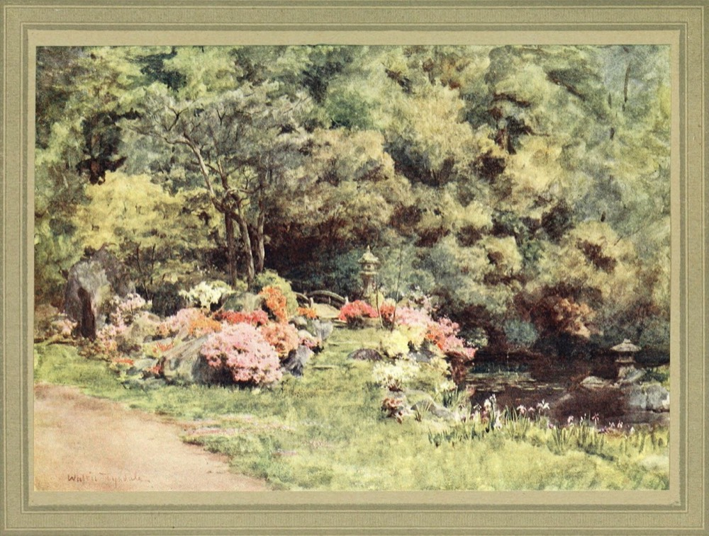
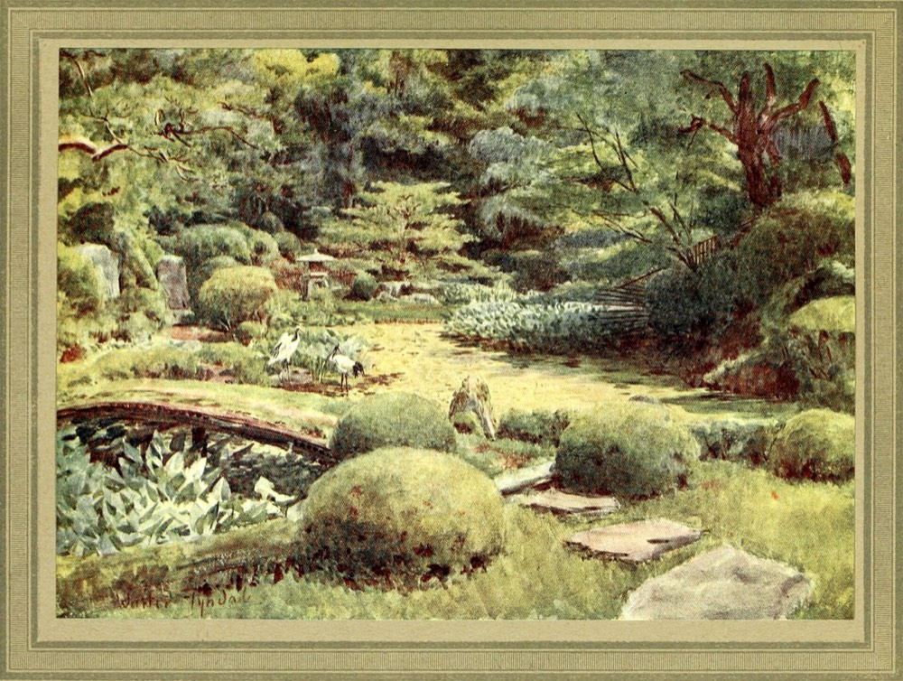

默认封面 · 三个方向
没有封面的那一格，应该长什么样
上传封面是少数、缺封面是常态。上一次把它做成了「色块 + 图标」，太像占位；这次把三种思路并排摊开，选一个再铺到全站。三个方向都只用暖忆色板与公有领域素材，不额外引风格。
页面底 #F5F2EC
纸 #FFFDF9
墨 #37322C
陶红 #96503F
赭石 #8A5C31
橄榄 #5A6350
A · 影像封面
当前页面在用 一张旧照片 / 一段布纹，标题压在底部暗角上最像「电影海报 / 旅行照片」，扫一眼就知道这是影像内容。片子与照片内容无关，只承担气氛；好处是整屏有画面、不像占位，坏处是每张都要挑图，且图片风格会左右整站气质。
电影沙丘 2
影单书籍失明症漫记
书单地点洱海 · 才村码头
足迹B · 字体封面
整块低饱和色 + 书名 / 片名 + 双细线，没有照片像旧书封或 CC 标准收藏的碟封：标题本身就是画面。最耐看、最不会出错，也最省素材；缺点是没有「照片」带来的记忆钩子，影单会显得太安静。
电影沙丘 2维伦纽瓦 · 2024DUNE PART TWO
书籍失明症漫记若泽·萨拉马戈BLINDNESS
地点洱海 · 才村码头大理 · 中国 · 2026LAKE
C · 手账拼贴
纸卡上贴一张小照片，手写标题 + 胶带 + 印章最贴「一个人的手账」：照片是贴上去的，标题写在下面，像真的把票根和照片收进本子。情绪最对，但信息密度低、每张卡都更「手作」，大批量列表会显得碎。
沙丘 2
丹尼斯·维伦纽瓦 · 2024
看过
失明症漫记
若泽·萨拉马戈
读过
洱海 · 才村码头
大理 · 中国
去过怎么选
| A 影像 | B 字体 | C 拼贴 | |
|---|---|---|---|
| 气质 | 电影感、画面强 | 书卷气、安静 | 手账感、暖 |
| 信息密度 | 高 | 中 | 低 |
| 素材成本 | 需要一组图（可用公有领域 / 随包素材） | 零素材 | 需要一组图 + 手作细节 |
| 适合 | 影单、足迹 | 书单、笔记 | 首页时间线、回顾 |
| 风险 | 图片风格决定整站气质 | 容易显得太素 | 列表里会碎 |
我的建议：A 与 B 混用——影单 / 足迹用 A（有画面），书单用 B（书封本来就是字体封面），首页时间线用 C 的小尺寸（像贴进本子）。三个方向都只改 hd-fallback 的样式，不动页面结构。